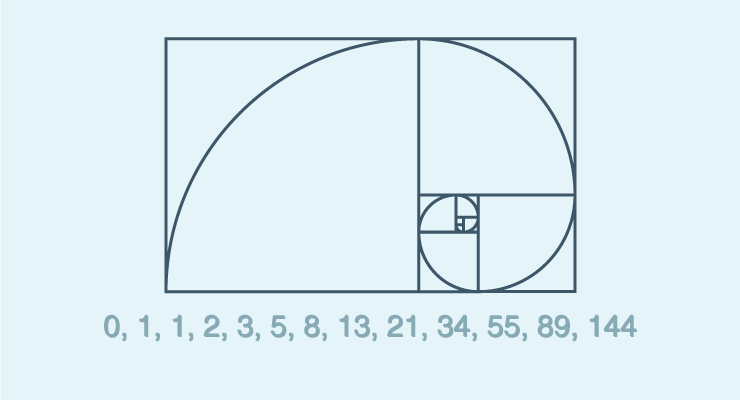

本文首先介绍了递归的定义、实质、满足条件等，然后利用 Ramda API 和 Spread & Rest 操作符对递归进行实例讲解。
递归的理论基础
递归的定义：一种直接或者间接调用自身的过程。
递归的实质：将待求解问题分解成规模缩小的同类子问题，然后递归调用方法来表示问题的解。是一个不断将问题拆分然后组合的过程。
递归的过程：“能进则进，不进则退”。
递归问题需满足的条件：
- 一个（或多个）基本情景 – 一个不使用递归而产生结果的终止情景；
- 一组可以将所有其他情景归约至基本情景的规则。
递归的条件归结为：一个终止条件和一组归约的规则。
递归能让我们写出非常简洁、直观的代码，但简洁并不等于简单（容易）。递归是一种从总体到局部的思维过程，与传统的命令式的思维方式差异较大。命令式思维要求显示地提供详细的求解步骤，而递归（或者函数式）要求用概括性的语言对问题进行描述，问题的描述本身就是编程的整个过程，这要求我们具有很强的抽象思维和逻辑推理能力。
递归的编程模式：
- 定义终止条件；
- 编写递归的归约规则。
但如果语言中实现了惰性求值，也可以不定义终止条件，比如递归生成无限长的序列。
以上便是递归的理论解释，下面我们通过一些实例对递归进行实际演示。
递归的实践
递归能够很好地处理列表和树形数据结构的很多问题。很多时候，我们解决问题的模式就是对不断缩小的列表或树反复做同一件事情。实际上，列表和树本身的构造也可以看做递归的过程。
列表可以看作有列表首元素（头部）和其余元素（尾部）的组合，如下所示：
1 | var list = R.prepend(1, R.prepend(2, R.prepend(3, []))); // => [1, 2, 3] |
本文中我们使用 ramda 和 expect npm库进行演示：
1 | const R = require('ramda'); |
快速排序
下面以经典的快速排序为例开始递归算法的演示。快排的定义为：所有小于头部的元素（它们也需要排序）在先，大于头部的元素（它们也需要排序）在后，终止条件为空数组。
首先我们用模式匹配 R.cond 的方式来进行递归排序。
1 | var quickSort = R.cond( |
快排的过程如下所示（借用 Learn You a Haskell for Great Good! 的图)：

如果只有一个 if-else 对，我们也可以使用 R.ifElse 来代替 R.cond。另外，我们还可以用 R.when 和 R.unless 来进一步简化 R.ifElse。
使用 Ramda API 的递归规则还是有些冗长，我们可以使用 ES6 中的 Spread & Rest 操作符和 R.unless 对列表的头部元素和其他尾部元素的提取和组合进行简化，如下所示：
1 | var quickSort = R.unless( |
斐波那契序列
下面展示的是斐波那契序列, 斐波那契序列的数学表达式如下所示：
- f(0) = 0
- f(1) = 1
- f(n) = f(n-1) + f(n-2)
以序列元素值为半径的斐波那契螺旋线如下所示：

代码实现如下：
1 | var fib = n => R.unless( |
map、filter、reduce
map、filter、reduce 作为函数式编程中处理列表的三个基本函数，在底层实现或者演示时，一般会采用命令式的 for 循环迭代来实现，既然列表本身可以看作递归结构，我们就用递归来尝试实现函数式编程中处理列表的 “三镖客”。
首先以 map 为例，从命令式 for 循环实现开始，然后是递归实现，并在对递归实现的优化中展示函数式编程（或者说 Ramda 库）灵活、多变而又优雅的编程方式，体会什么才是真正的编程之美。
map 的 Hindley-Milner 类型签名如下所示：
1 | map :: Functor f => (a → b) → f a → f b |
其实 map 是 Functor 的一个函数，Functor 是具体范畴之间的映射（态射），关于范畴、Functor、态射等函数式的概念不在本次的讨论范围之内，感兴趣的同学可以自己查看相关资料。在这里，可以将 Functor 看做是列表（列表是 Functor 的一个实例），map 看作不同类型列表之间的映射，将源列表中的元素进行转换，生成一个包含映射后元素的新列表。
map 列表形式的类型签名如下：
1 | map :: (a → b) → [a] → [b] |
map 命令式实现：
1 | var map = (fn, list) => { |
map 递归实现1，三目运算符版：
1 | var mapR = (fn, list) => |
map 递归实现2，模式匹配（R.cond）版：
1 | var mapR2 = (fn, list) => R.cond([ |
map 递归实现3，unless（R.unless）版：
1 | var mapR3 = (fn, list) => R.unless( |
map 递归实现4，Spread Operator + unless 版：
1 | var mapR5 = (fn, xs) => R.unless( |
总结一下上述命令式、递归实现以及递归的优化实现的特点。
命令式实现需要显式写出内部的每步实现步骤，包括如何获取、变换和组合元素等；还使用了 mutable 的数据，包括全局的结果列表 newList 和 迭代索引 i。命令式的好处是符合正常的思维方式，但缺点是引入了较多冗余的 “噪声”，比如 for 循环、全局变量 newList 和 i 都是辅助项，这些辅助项稍微增多，代码复杂度会显著上升，真正有用的信息便会淹没在了这些 “噪声” 里面。
反观递归式（函数式）的实现（如 map 的 Spead Operator + unless 版实现），我们只需要通过对问题的描述，便得到功能的实现。而描述的过程看似简单，实则内含了对问题本质的抽象和逻辑分析，对人们的思维能力要求更高。
再讲一下 Spead Operator 语法糖。很多人不屑于用语法糖，态度往往是：这不就是 xxx 的语法糖吗？没什么大不了的啊。但语法上的便利其实也是很重要的一方面，因为我们想要表达的思想是要由语法来承载的。
这里引用《函数式编程思维》中的一段话：
我跟 Martin Fowler 在巴塞罗那的一辆出租车上有过一次记忆深刻的讨论，我们聊的是 Smalltalk 的衰落和 Java 的兴盛。Fowler 在这两种语言上都有很深厚的积累，他说，起初 他觉得从 Smalltalk 到 Java 的变化只是一些语法上的不便，结果却发现被阻碍的还有原先 语言所承载的思维方式。在语法处处掣肘下塑造出来的抽象，很难配合我们的思维过程而 不产生无谓的摩擦。
下面对 filter 和 reduce 的递归实现做一个展示。
filter 的递归实现如下：
1 | var filterR = (pred, list) => |
reduce 的递归实现如下：
1 | var reduceR = (fn, acc, list) => |
总结
本文从递归的定义、实质等基本理论开始，然后是递归的一些实例，其中大量运用了 ramda 函数式编程库中的 API，既是对递归的演示，也是对 ramda API 的实践展示。展示了递归和函数式在编程时的强悍的表达能力和对极致简约的追求。